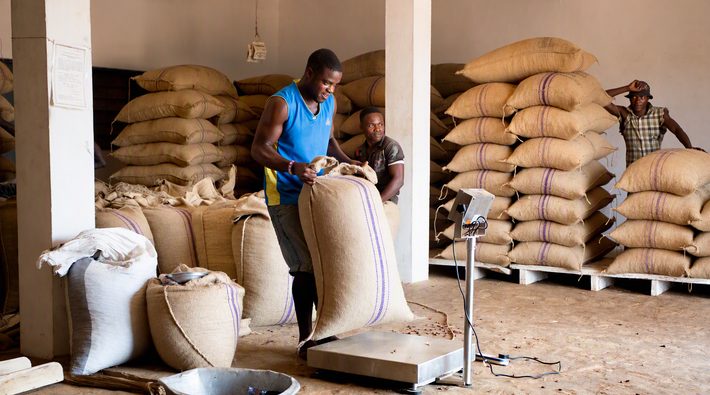

Rassembler
Organiser les apports et présenter les céréales disponibles.
 SOUROU SAMIACOOPÉRATIVE CÉRÉALIÈRE
SOUROU SAMIACOOPÉRATIVE CÉRÉALIÈRE
QUI NOUS RASSEMBLE · LE SOUROU
SOUROU SAMIA, Coopérative Céréalière du Sourou, est basée à Tougan, dans la province du Sourou au Burkina Faso. Elle rassemble 13 producteurs membres autour de la collecte, du stockage et de la commercialisation des céréales.
BF
Vallée du Sourou
Burkina Faso
NOTRE RAISON D'ÊTRE
La Coopérative Céréalière du Sourou rassemble 120 producteurs membres autour de la mise en valeur des récoltes. Depuis Tougan, SOUROU SAMIA organise la collecte, favorise le stockage dans de bonnes conditions et facilite la rencontre entre producteurs et acheteurs.
La coopération et l’échange donnent à chaque récolte un chemin plus lisible, du champ jusqu’au marché. La coopérative met l’accent sur la traçabilité des lots, la qualité des céréales et la transparence des informations communiquées aux acheteurs.
UNE CHAÎNE À RENDRE LISIBLE
Organiser les apports et présenter les céréales disponibles.
Donner les repères utiles : céréale, quantité, grade, prix, récolte et lieu.
Rapprocher producteurs et acheteurs autour d'une visite et d'un échange.
CHIFFRES CLÉS · CAMPAGNE 2025/2026
72 000 kg de céréales disponibles, réparties entre Maïs, Sorgho et Petit Mil, pour une coopérative de 120 producteurs membres. Prix indicatifs de 210 à 310 FCFA/kg selon la céréale.
Voir le catalogueDÉCOUVRIR LES RÉCOLTES